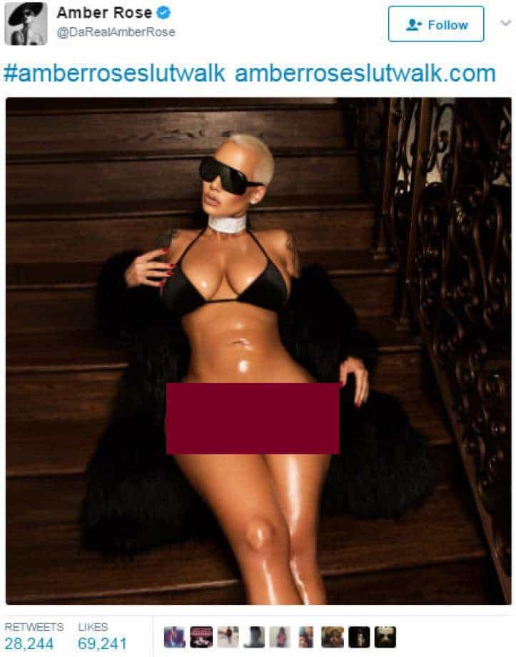

Lux doesn't like the ham-fisted ideals of the dominant movements of this era. She is guilty of thought-crime, empathizing with the manosphere and airing her controversial views, among other things.


‘Lo and behold’, I thought to myself, yet another self-proclaimed feminist vaingloriously flashing her bits to thousands of adoring fans online. That was my reaction to the semi-nude picture of Amber Rose circulating on social media.

The celebrity fawning was more excessive than what I had anticipated and to be honest, I was desensitized to the whole thing. As a regular user of the internet, seeing partially or fully naked women online had left me inured, to the point where I had begun to rationalize such degenerate behaviour. One would think that feminism would get rid of these ugly depictions of female sexuality, but no, feminists fail at logical reasoning.
As a former feminist, my red pill moment happened recently. I believe in the lofty rationality, unparalleled pragmatism of those intelligent individuals who take it upon themselves, who make it a personal goal to escape the social engineering being forced upon them, whether they are male or female. Masquerading feminism as equality, as some sort of legitimately virtuous movement is an affront to human dignity. Whilst screaming how utterly sexist it is to sexualize the female body, they quite odiously profit off the very same thing.
Almost every young woman nowadays is being taught to embrace their leadership skills, to fashion themselves as bossy, rational leaders, all the while ignoring the very fact that most women are idiotic, uncultured and, if made powerful, potentially sociopathic. The fact is, most women distinctly lack the ability and prowess to become great minds. Let’s look at the current state of affairs. How many noteworthy economists have been women? How many philosophers have been women?
So philosophical. So powerful. Derp derp.
How many praiseworthy writers have been women? Literally zero. In the latter category, sure there are many who excelled in the craft of producing subpar, commercial drivel, such as J.K Rowling or Agatha Christie but none of the female writers have been able to produce masterpieces that could rival Hemingway’s or even Bukowski’s. That is because female writers notoriously lack the imagination and creativity to segue into unknown realms, to broach new ideas in their work.
Writers aside, how many good female directors have made films worth watching? The truth is, very few and when they did make a decent movie, it was at the expense of a robust screenplay written by a male writer.
The simple point I’m making is that, not only does feminism lack the tenacity of a good movement, it sure as hell contradicts itself a lot. With prominent figureheads like Lena Dunham or Emma Watson, the feminist movement has transformed into a cause celebre for rich, uneducated airheads who do not realize that their movement is corrupting the minds of millions, spawning bossy girls whose stupidity should be banned from the leadership ranks, but who in their vain thirst for power and fame, marginalize smart, disenfranchised young men.
It is about time that this reality be reckoned with. Women in power are revolting, because they lack the backbone and intellectual integrity to spearhead game changing movements. Hilary Clinton is a prime example of that.

Moreover, Hollywood liberals keep peddling the image of a young, empowered female lead overcoming obstacles, none of which can compare to the real struggles of the young men of our generation, who are increasingly silenced and forced into submission by arrogant women who’ve been sold the myth that they deserve the same things as men with far less effort or skill.
How many more lies will the feminist movement belt out until people finally realize how they’re being conned? There’s something sinister about a young Hollywood starlet advocating for women’s rights and equal pay, all the while sucking dick or worse for the opportunity to get an advance read. There’s something remarkably appalling about selling this sex positive myth to women, who are exploited and dehumanized and led to believe that it’s all about empowerment.

A woman in her thirties who sleeps around and obviously lacks stability is not empowered, she’s broken. How long will it take for liberals to wake up and realize that their very values put civilized society at risk of extinction, that their nihilistic proclivities are being advertised to gullible human beings who will be the ones affected the most by this drastic change in social construct? Yes, you’ve guessed it. The truth is they don’t care.
It is startling that people with no values can advertise themselves as the righteous, enlightened ones in this debate. If they get their way, we will be faced with social scourges of epic proportions to say the least, and society will be doomed as our norms will favour the idiots instead of the truly qualified men, prompting widespread intellectual decline.
As a young 22-year-old woman, I stand in solidarity with all the men in the world who are vilified beyond description, for the simple crime of daring to exist in a world that’s being slowly overtaken by over-zealous, entitled, unqualified women.
Read More: Why The Female “Anti-Feminist” Is A Feminist In Disguise